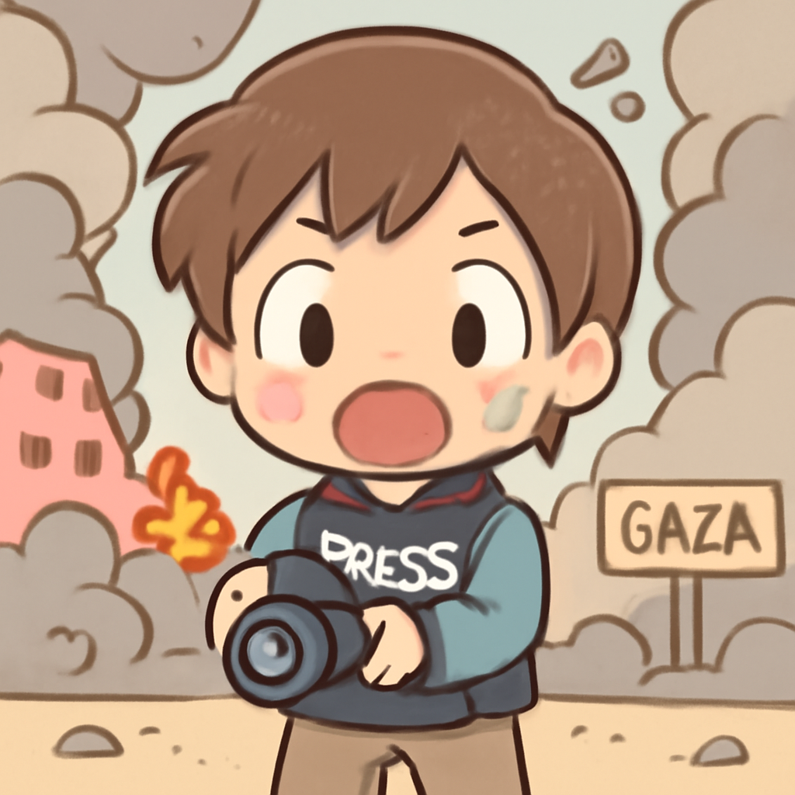
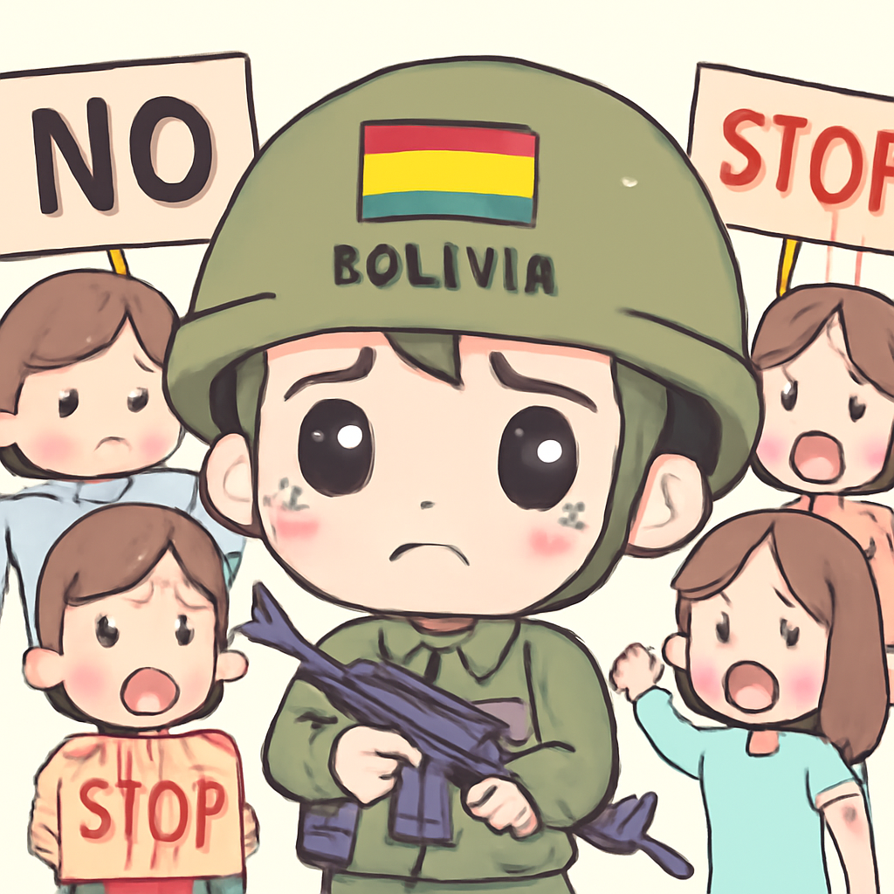
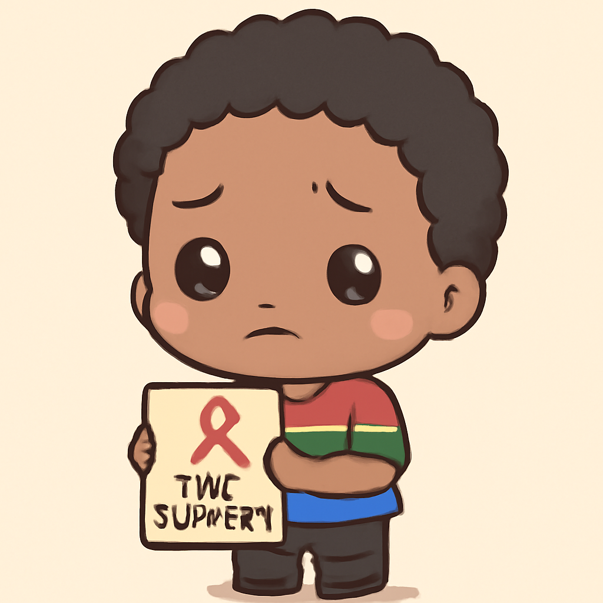

其一 · 伊朗 · 霍爾木茲海峽關閉
伊朗宣稱因以色列在黎巴嫩的攻擊關閉霍爾木茲海峽。
在這個充滿緊張氣氛的時刻，伊朗宣稱因為以色列對黎巴嫩的攻擊，已經關閉了霍爾木茲海峽。美國軍方則對此表示懷疑，這一切都發生在即將召開的美伊會談前夕。這個海峽是全球重要的石油運輸路線，若真的關閉，恐怕會影響到整個能源市場的穩定，讓油價再度飆升。
🔗 原始新聞 ↗
2026-06-21 · 以古觀今，以笑抗愁
伊朗宣稱因以色列在黎巴嫩的攻擊關閉霍爾木茲海峽。
在這個充滿緊張氣氛的時刻，伊朗宣稱因為以色列對黎巴嫩的攻擊，已經關閉了霍爾木茲海峽。美國軍方則對此表示懷疑，這一切都發生在即將召開的美伊會談前夕。這個海峽是全球重要的石油運輸路線，若真的關閉，恐怕會影響到整個能源市場的穩定，讓油價再度飆升。
🔗 原始新聞 ↗
以色列的空襲導致包括新聞攝影師在內的六人遇難。

在加薩地區，最近以色列的空襲造成六人遇難，受害者中甚至包括一位阿爾傑茲拉的攝影師。以色列軍方則指控他是哈馬斯的狙擊手，但並未提供證據。這場衝突不斷升級，對當地居民的安全造成了嚴重威脅，讓人不禁想問：和平到底還要多久？
🔗 原始新聞 ↗
博利維亞因抗議活動宣布全國緊急狀態。

博利維亞總統因為抗議活動持續發酵，宣布全國進入緊急狀態。民眾因基本生活用品短缺而走上街頭，這一舉動可能會引發更大範圍的社會動盪。可見，當民生問題無法解決時，民主也真的是一個動人的歌詞而已。
🔗 原始新聞 ↗
美國宣布停止對南非HIV計畫的資助，引發擔憂。

美國宣布將停止對南非的HIV計畫資助，這一消息讓八百多萬名HIV陽性患者的未來變得更加不確定。南非擁有全球最高的HIV感染率，這一決定可能會導致更多人面臨生命危險。希望這不是一個不幸的「不讓你們活得太好」的政策轉變。
🔗 原始新聞 ↗
澳洲確認首例H5N1禽流感病例，警報拉響！
澳洲最近確認了首例H5N1禽流感病例，這讓本來以為自己可以高枕無憂的澳洲人感到不安。H5N1禽流感在全球範圍內傳播，現在已經覆蓋到每一個大陸，這意味著禽類的健康和人類的安全都受到威脅。希望這隻是個小問題，不會變成「禽流感大冒險」。
🔗 原始新聞 ↗